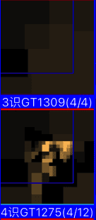
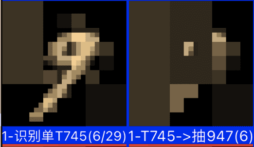
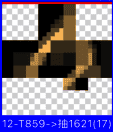

AI系列之《2025.12-2026.01：ST/稀疏码识别优化与特征浮现》

来源：HELIX_THEORY/手稿/assets/789_GT识别结果仍不准确问题.png

来源：HELIX_THEORY/手稿/assets/791_9里面识别到了0的BUG.png

来源：HELIX_THEORY/手稿/assets/793_区域竞争力问题导致最准的排在最后.png
来源：Note35.md、Note36.md
12 月到次年 1 月，重点是 ST 识别算法、稀疏码识别算法、GT 识别困难问题、特征演化浮现、提升对撞率，以及识别竞争中的“准中取具”和全含抽象。
识别不准是后续一切认知问题的源头。ST 与稀疏码算法的优化，试图提高基础视觉匹配的稳定性；GT 识别困难则暴露出更高层特征在抽象、对齐和竞争中的复杂性。
“准中取具”很关键：系统不是在所有候选里找一个绝对正确答案，而是在相对准确的一批候选中抽取可泛化结构。这与后来的“从绝对准度转向竞争浮现为准”形成连续脉络。